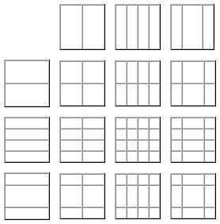
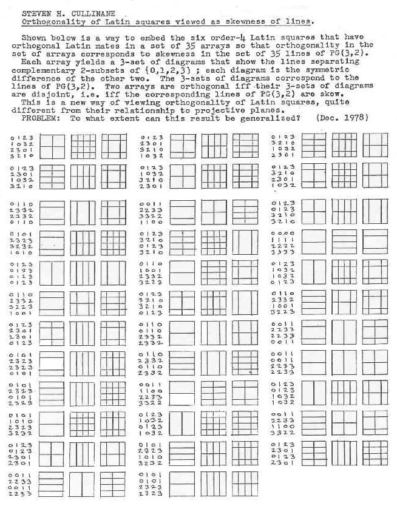

|
Finite Geometry Notes
|
The figures below show a way to visualize the 15 points of the smallest projective space*, which has 15 points and 35 lines.

If we regard the lines within the squares as nonzero elements in the two-element field GF(2), then three points are collinear if and only if the three corresponding squares have inner lines that sum to zero.
The note below, from December 1978, shows how this works.

* "Space" in the sense "point, line, plane, space...."